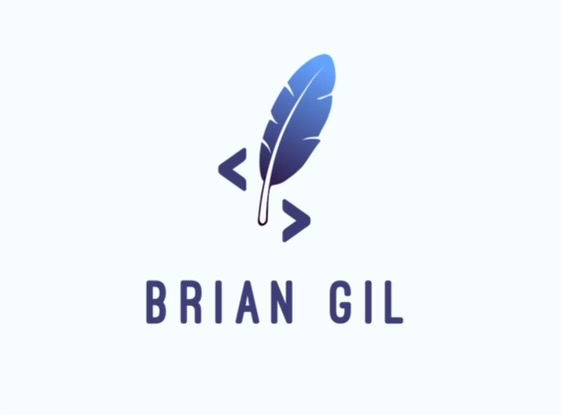

Brian T. Gil
GitHub
| LinkedIn
| HackerRank
| ServiceNow
Summary
Technology professional since 2011 when trained on TCP/IP and recieved Active Directory on-the-job training for U.S. Army deployment.
Passed certification exams for CompTIA's Network+, A+, and Security+, and maintain continuing education credits for A+ and Sec+.
Initially, attended Erie Community College for Business Admin, but earned A.S. in General Studies in 2008.
Served on Active Duty in the US Army as logistician from 2006-2015.
Later, graduated from Canisius University with B.S. in Computer Science and minor in Management Information Systems in 2018.
Software engineer for M&T Bank since 2020, primarily focusing on ServiceNow's Service Catalog.
Currently serving in the US Army Reserves as a systems administrator since 2015.
Work experience
-
M&T Bank
Software Engineer, 2020-Present
- As the lead ServiceNow developer, coached and mentored two developers on the ServiceNow Service Catalog
- As a .NET developer, developed applications that enhanced custom REST API end point for managing Virtual PCs
Thin Client Specialist, 2019-2020
- Managed HP ThinPro/Linux OS and Thin Client devices
- Used HP Device Manager to remotely manage Thin Client devices
- Developed Python, BAsh, and Powershell scripts to manage Thin Client devices
- Used VMWare vSphere and PowerCLI to manage virtual PCs
- Troubleshoot Citrix ICA connection issues within MS Windows and HP ThinPro environments
-
U.S. Army Reserves
IT Specialist, 2015-Present
- AD OU Admin
- ATCTS Admin
- Resolver
- System Admin
-
Canisius University, 2018-2019
Admissions CRM Administrator
- As the Slate CRM Administrator, developed reports to enhance managment decision-making
- Developed SQL query snippets for non-technical users within query-by-example platform
- Developed automated email messaging to prospective and accepted students throughout the admissions process
- Collaborated with business users to gather development requirements
- Trained non-technical users on designing database and implementing queries
Education
- Canisius University, Computer Science, 2018
- Erie Community College, General Studies, 2008
Skills
- Programming/Scripting Languages
- Javascript, Python, Powershell, Bash, SQL
- Operating Systems
- Windows, MacOS, Linux, Cisco IOS
- Information Technology
- Leadership
Awards, certifications, and achievements
- CompTIA Security+ CE, 2019
- Canisius University Computer Science Department Excellence in Academics Award, 2018
- Canisius Earning Excellence Program (CEEP) Award, 2017
- Distinguished Leadership Award, US Army NCO Academy, 2014
- Humanitarian Service Medal, Hurricane Sandy Releif, 2012
Volunteer
- Canisius University Animal Behavior, Ecology, and Conservation, 2018-2019
- US Army Tobyhanna Army Depot, 2018
- Catholic Charities Immigration and Refugee Assistance Program, 2015-2017